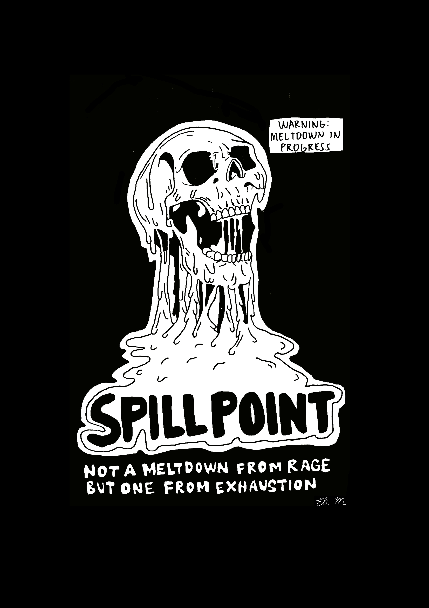
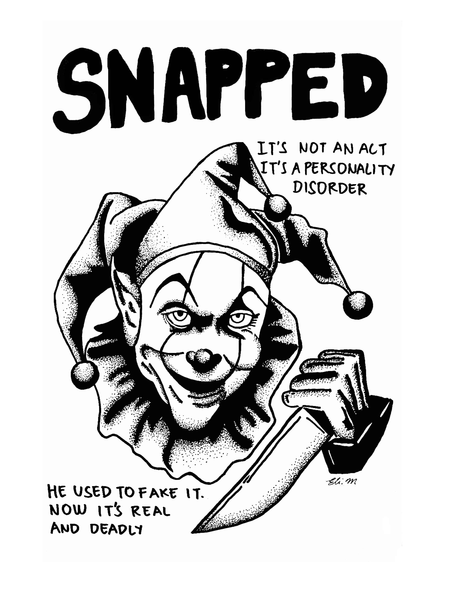
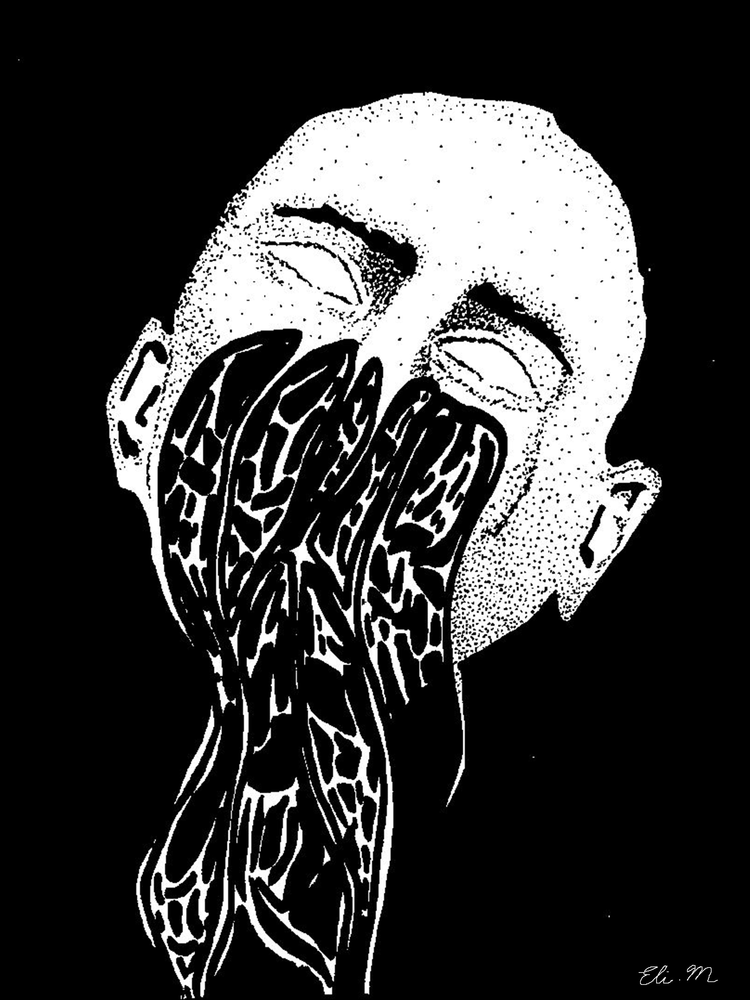
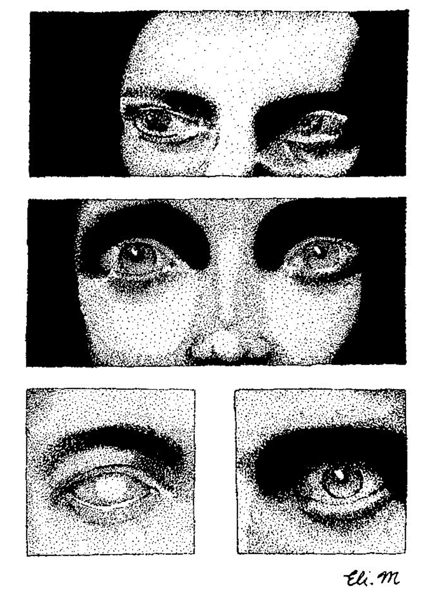
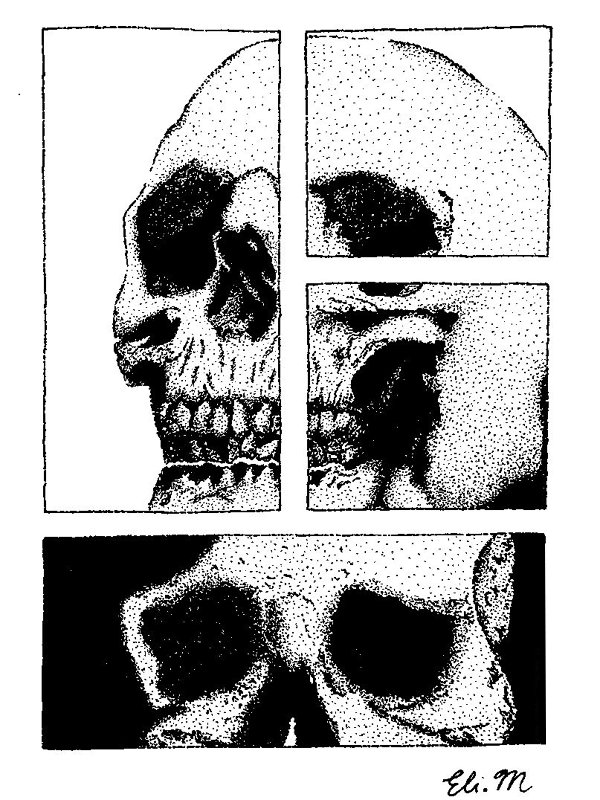

01
01
VISUAL STUDY
Awake
Trying to stay awake and remember every real thing that happened.
AWAKE
01 / 09
A collection of personal works exploring emotion, memory, identity, and the darker spaces of human experience.
VISUAL ART / 2026
01
Trying to stay awake and remember every real thing that happened.
 02
02
I tried drowning my emotions through drinking and smoking, but nothing worked. Nothing made me feel better; it all made me feel worse. It feels like being trapped in a cycle, searching for an escape that never arrives.
 03
03
A head full of echoes, repeating thoughts and voices that refuse to fade away.
 04
04
What lives inside. The real part, waiting, watching, rising.

05Not a meltdown from rage but one from exhaustion. The kind you don't come back from easily.

06He used to fake it. Now it's real and deadly.

07A figure dissolves into the background, his form fading with each tear. Slowly, he becomes part of the silence he once stood against.

08A series of eyes become windows into different storms—rage, sorrow, joy, fear, and hope. No words are spoken, yet every gaze carries something.

09A lone skull rests in the center, carrying echoes of laughter, pain, and longing. Death, but not silence—memory carved into what remains.